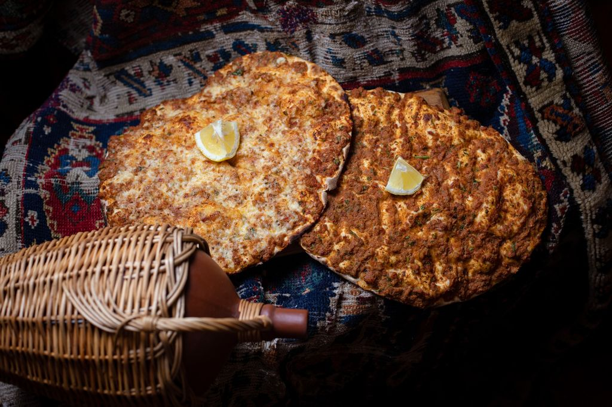
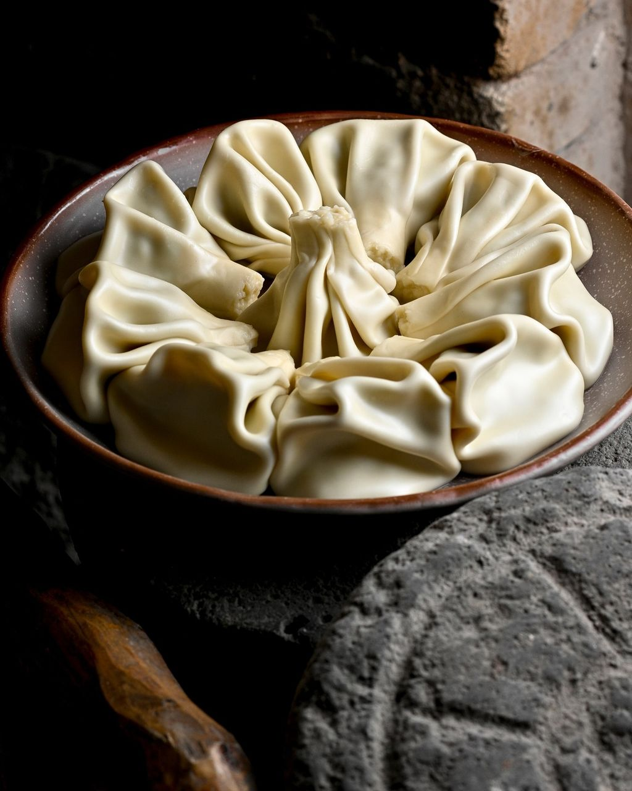

THE SIGNATURE
Lahmajo
1,100 ֏The dish behind our name. A classic worth coming back for.
ARMENIAN FLAVOURS · YEREVAN
A table to gather around. A lahmajo to fall in love with. Discover the flavours of Armenia in the heart of Yerevan.

A PLACE AT THE TABLE
Some of the best moments happen around a table. At Tun Lahmajo, Armenian and regional dishes bring everyone together — whether you're discovering Yerevan or coming back for a familiar favourite.
Start with our namesake lahmajo, make room for dolma, and stay for one more bite.
Find your favourite ↓
TAKE YOUR TIME. TAKE ANOTHER BITE.
From Armenian favourites to Georgian classics, follow your appetite. Bring someone hungry.
Discover the full menu ↗MAKE ROOM FOR GOOD COMPANY
A quiet dinner for two or a catch-up with friends. Start planning your next visit to Teryan Street.
Reservation previewThis is a demonstration. No booking is sent or confirmed. To reserve a real table, call +374 10 538717.
YOUR RESERVATION PREVIEW
No reservation has been made.This is a demo of the booking experience. Please call the restaurant to arrange your visit.
Call to reserve ↗WE'LL SAVE YOU A PLACE
In Yerevan? Make us part of your day.
Call us to ask about a table or plan your visit.
Good food is closer than you think.
Get directions on Google Maps ↗